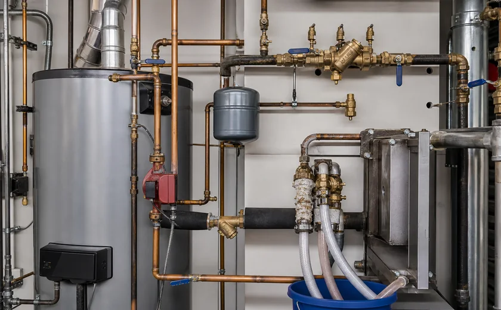
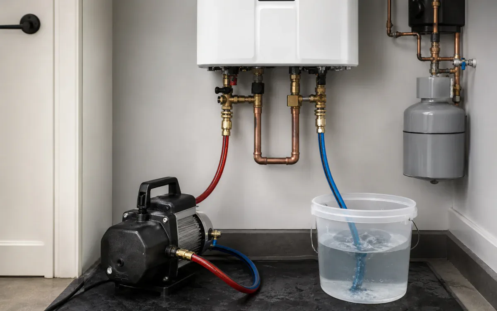
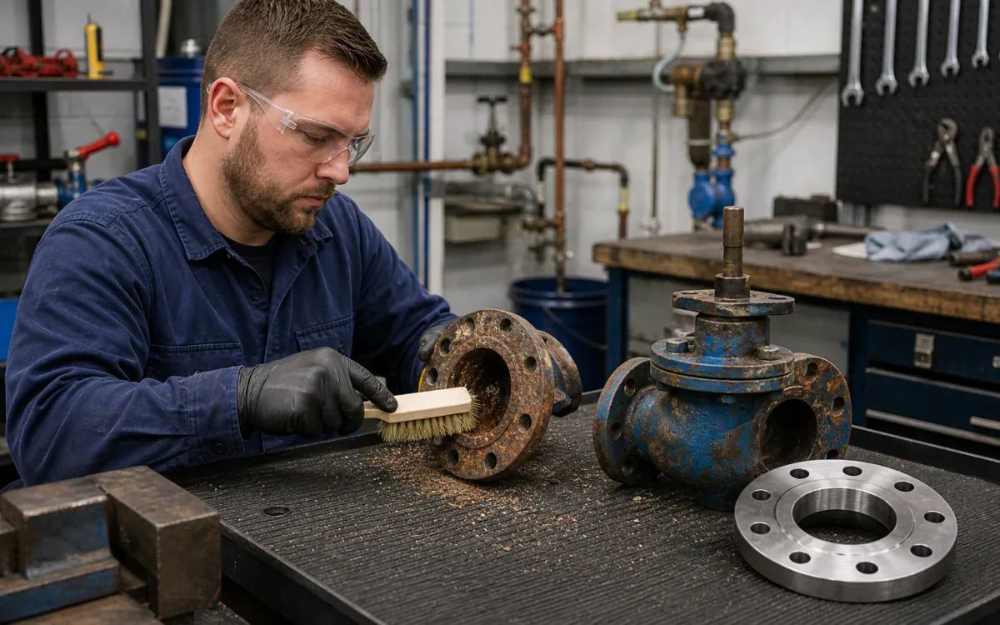

Scale removal should not bring muriatic acid inside.
Water lines, fixtures, water heaters, and drains cleared of scale and calcium without hydrochloric acid handling.
- CleanTankless heat exchangers, boilers, recirculation components, valves, fixtures, strainers, pumps, and service piping
- RemoveCalcium carbonate, mixed mineral scale, rust, iron deposit, and soap/mineral film
- MethodIsolate, establish service circulation or controlled soak, monitor descaling, drain, rinse, and restore per OEM procedure
- BoundaryUse LOTO and pressure relief, protect potable cross-connections, confirm metals/elastomers, follow OEM warranty, and fully flush before service.
- Open task controls and documents
Why VertKleen fits Plumbing.
Calcium, scale, and rust in supply lines, fixtures, and water heaters are usually attacked with hydrochloric-acid products or CLR. VertKleen Descaler clears buildup without hydrochloric acid handling, with metal compatibility reviewed for occupied-building plumbing work; HCR handles heavier rust passivation.
Review field evidence
What Plumbing buyers need documented first.
Water lines, fixtures, heaters, and drains need scale removal without hydrochloric acid handling inside occupied buildings.
Bundle: Descaler for calcium and scale, HCR for heavier rust and passivation, Neutral for sensitive equipment cleaning.


VertKleen products for Plumbing.
VertKleen options for Plumbing workflows.
Field proof from Plumbing sites.
Documented work from the VertKleen field library.


Restore flow and heat transfer in isolated tankless heaters, boilers, fixtures, and scale-prone water components.
Task controls first. Product choice follows the asset, deposit, materials, operating window, and discharge route.
- Task
- Restore flow and heat transfer in isolated tankless heaters, boilers, fixtures, and scale-prone water components.
- Asset / substrate
- Tankless heat exchangers, boilers, recirculation components, valves, fixtures, strainers, pumps, and service piping
- Soil / deposit
- Calcium carbonate, mixed mineral scale, rust, iron deposit, and soap/mineral film
- Starting chemistry
- VertKleen Descaler, VertKleen CIP HCR, VertKleen Neutral
- Concentration
- Choose within the current HCR/Descaler guide from scale severity, metallurgy, water volume, and OEM limits; no universal ratio.
- Process controls
- Log solution temperature, concentration, circulation flow, pH/reaction trend, dwell, rinse pH/conductivity, and post-service flow.
- Shutdown / containment
- Use LOTO and pressure relief, protect potable cross-connections, confirm metals/elastomers, follow OEM warranty, and fully flush before service.
- Verification endpoint
- Recovered flow or temperature rise, clean inspection point/strainer, stable rinse pH/conductivity, leak check, and potable return-to-service procedure.
Review the current safety and application file.
Confirm revision, product identity, material compatibility, and application scope before site approval.
Bring us your Plumbing cleaning task.
The request opens with asset, soil, operating conditions, materials, wastewater route, and buying deadline already prompted.